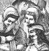
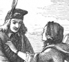

Collective Biographies of WomenAn Annotated Bibliography
Alison Booth
615.
Owen, Mrs. Octavius Freire [Emily]. The Heroines of Domestic Life. London and New York: Routledge, Warne, & Routledge, 1861; [1877].
Search OCLC WorldCat for this title.
Search Google Books for this title.
Owen, Mrs. Octavius Freire [Emily]. The Heroines of Domestic Life. London and New York: Routledge, Warne, & Routledge, 1861; [1877].
TOC: Ruth; Antigone; Panthea; Eponina; Gertrude von der Wart; Margaret Roper; Anne Askew; Jeanne D'Albret; Pocahontas; Lucy Hutchinson; Lady Rachel Russell; Grizel Cochrane; Winifred, Countess of Nithsdale; Helen Walker; Flora MacDonald; Louise Schepler; Emilie de Lavalette; Elizabeth Fry; Prasca Loupouloff; Sarah Martin; Grace Darling; Florence Nightingale.
British Library. Riches. Oldfield.
-
Ruth and Naomi
-
Margaret Roper taking farewell of her Father
-
 Jeanne d'Albret refusing to walk to the altar
Jeanne d'Albret refusing to walk to the altar -
Lucy Hutchinson binding up the wounds of a Royalist
-
Flora MacDonald taking care of the Pretender
-
Frasca Loupouloff on the steps of the Senate House
-
Florence Nightingale
Search OCLC WorldCat for this title.
Search Google Books for this title.